一、为什么要搭建本地 AI 知识库
在日常工作中，我们积累了大量笔记、文档和资料，但它们往往是分散的，难以被高效检索和利用。 通过 Codex + Obsidian + LLM Wiki 的组合，你可以将本地笔记变成一个可以通过自然语言对话来查询和整理的知识库。
- 完全本地化：数据不上云端，隐私安全可控
- AI 赋能：通过 Codex 对话式交互，让 AI 帮你检索、总结和关联笔记
- 双向同步：Obsidian 笔记变更后，LLM Wiki 自动索引，AI 实时感知
- 零成本：所需软件全部免费或开源
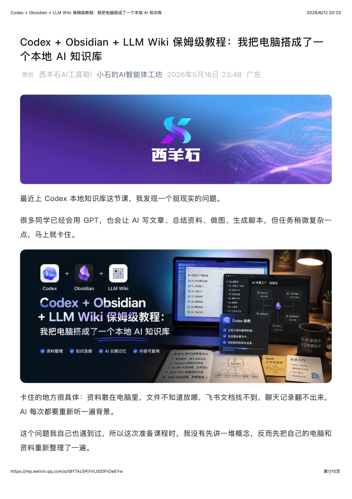
二、工具介绍
Obsidian
一款强大的本地 Markdown 笔记工具，以本地文件夹为基础，支持双向链接、图谱视图和丰富的插件生态。
所有笔记以 .md 纯文本文件存储在本地，是完全由你掌控的知识库。
LLM Wiki
一个 Obsidian 社区插件，能将你的 Obsidian 笔记库变成一个可以通过 AI 查询的 Wiki。 它负责将本地笔记内容索引化，让 AI 能够高效地理解和检索你的知识。
Codex
作为 AI 编程助手，Codex 在这里扮演"对话界面"的角色。它可以直接连接到你的 Obsidian 知识库， 接收你的自然语言指令，完成知识检索、总结、关联和创作等任务。
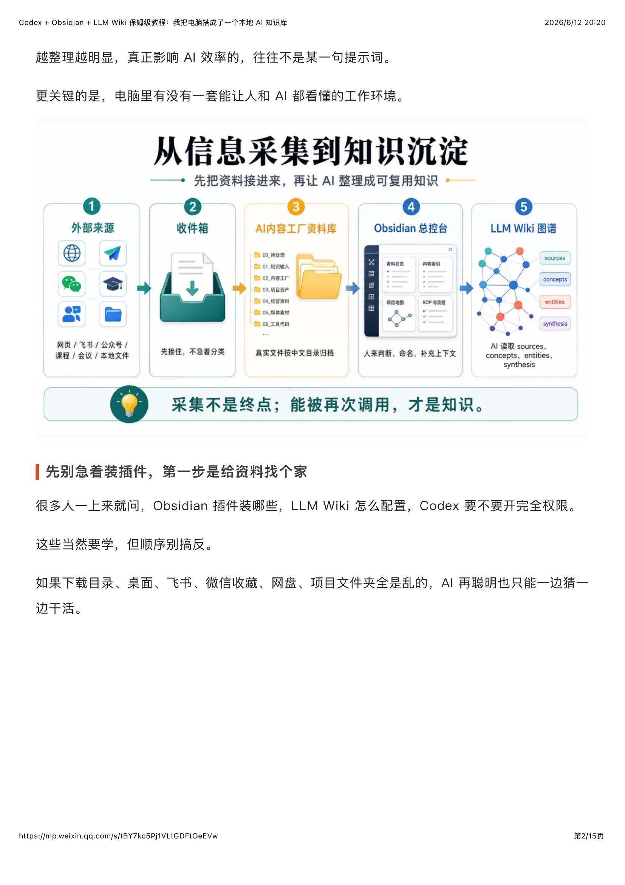
三、安装 Obsidian 并创建知识库
3.1 下载安装 Obsidian
- 访问 Obsidian 官网
https://obsidian.md下载对应平台版本 - 安装并启动 Obsidian
- 点击"创建新库"，选择一个本地文件夹作为知识库的存储位置
- 给你的知识库命名（如"我的知识库"），点击创建
3.2 初始化你的知识库结构
建议创建以下基本目录结构：
日记/— 每日记录项目/— 各项目文档学习/— 学习笔记和资料参考/— 参考资料和摘录模板/— 笔记模板
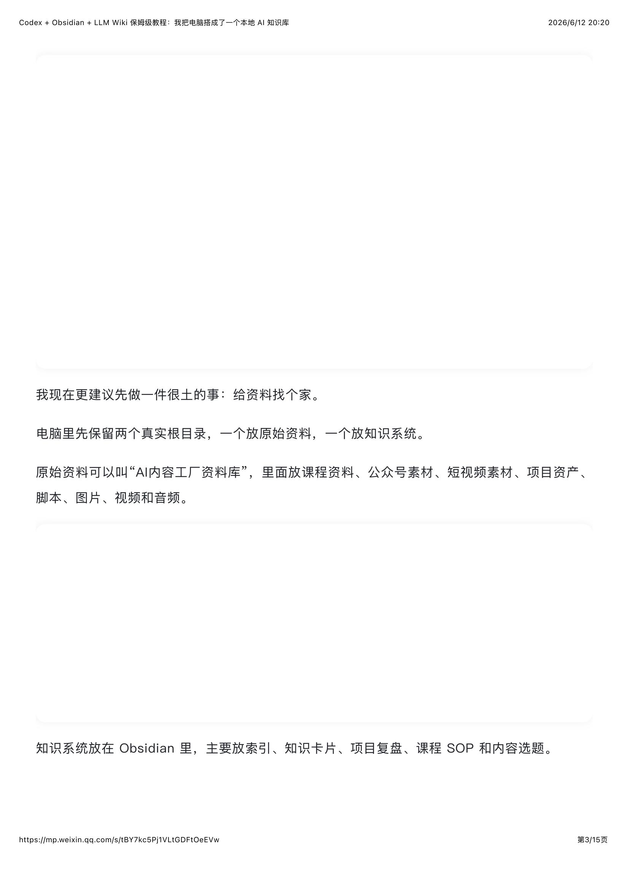
四、安装配置 LLM Wiki 插件
4.1 安装插件
- 打开 Obsidian → 设置 → 第三方插件 → 关闭安全模式
- 点击"浏览"，搜索
LLM Wiki - 找到后点击安装并启用
4.2 配置 LLM Wiki
- 在插件设置中，配置索引目录（通常选择整个知识库文件夹）
- 选择嵌入模型（Embedding Model），建议使用本地方案以获得最佳隐私保护
- 设置索引更新策略（推荐"文件变更时自动更新"）
- 等待首次索引完成（根据笔记数量，可能需要几分钟）
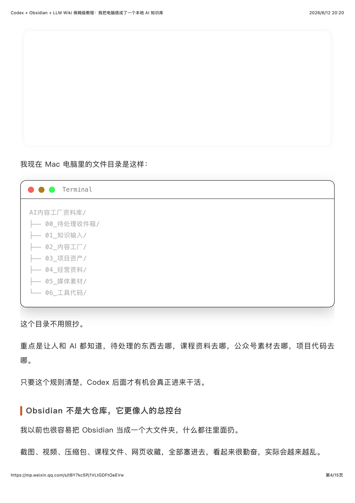
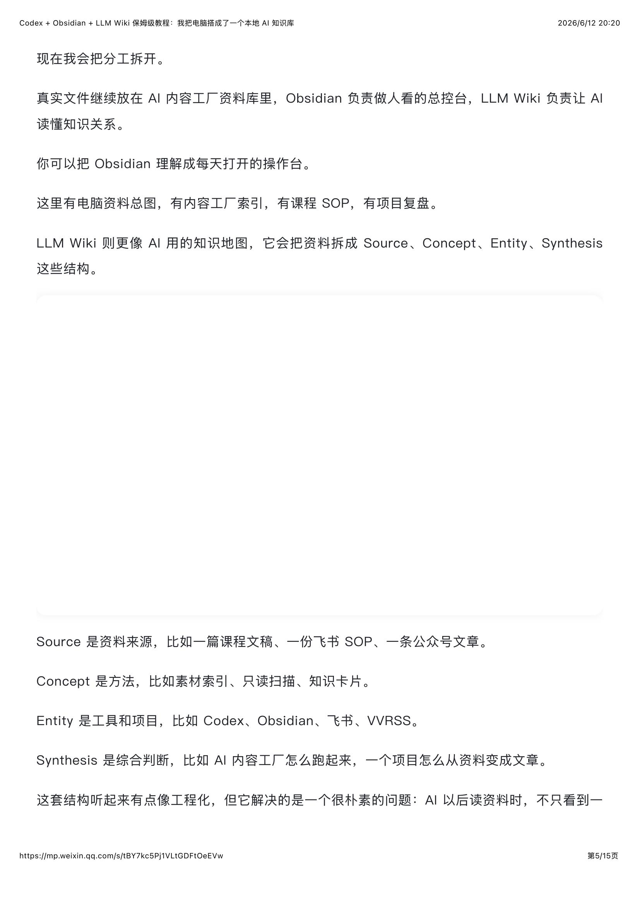
五、连接 Codex 到你的知识库
5.1 将知识库添加为 Codex 项目
- 打开 Codex 桌面应用
- 点击"添加项目"，选择你的 Obsidian 知识库文件夹
- Codex 会自动识别该目录下的所有
.md文件
5.2 配置 AGENTS.md
在知识库根目录创建 AGENTS.md 文件，告诉 Codex 如何与你的知识库交互：
# AGENTS.md
## 知识库规则
- 这是一个 Obsidian 知识库，所有笔记以 Markdown 格式存储
- 使用双向链接 [[笔记名]] 关联相关内容
- 每次回答时，优先检索本知识库中的相关内容
- 当有新的知识或想法时，帮我创建新的笔记文件
- 使用中文回复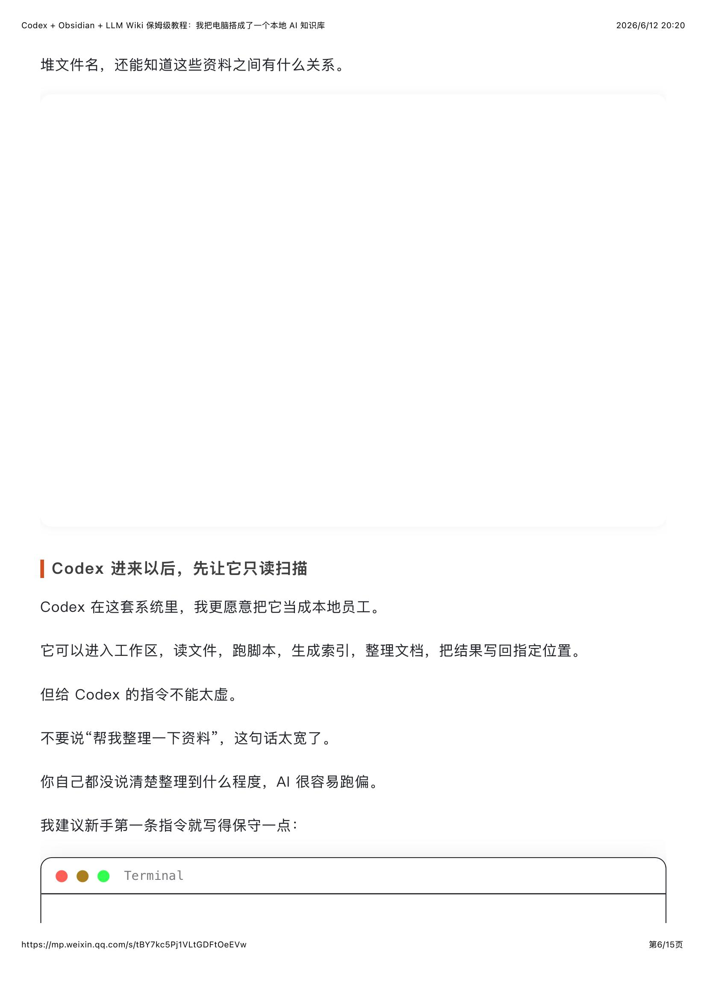
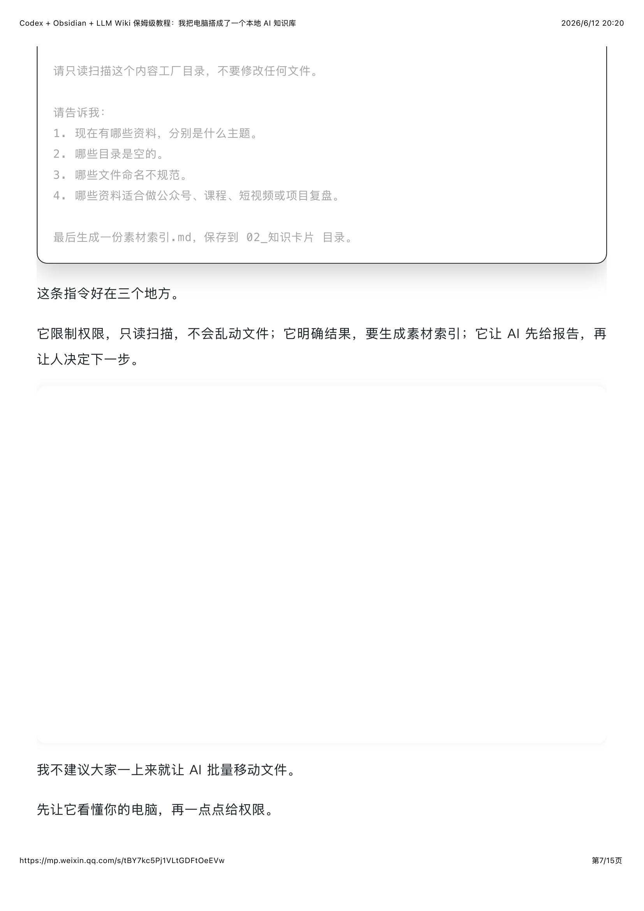
六、实战：用 AI 与你的知识库对话
一切配置就绪后，你就可以在 Codex 中用自然语言与你的知识库互动了。
场景一：知识检索
在我笔记里，关于"系统设计"有哪些记录？帮我总结一下关键观点。场景二：笔记创建
帮我创建一篇新笔记，总结今天关于微服务架构的学习内容，并链接到已有的"系统设计"笔记。场景三：知识关联
扫描我的知识库，找出所有与"分布式系统"相关的笔记，并生成一个索引页面，用双向链接关联它们。场景四：深度研究
基于我笔记中关于"RAG 检索增强生成"的内容，结合当前最新的行业实践，帮我写一份技术选型分析。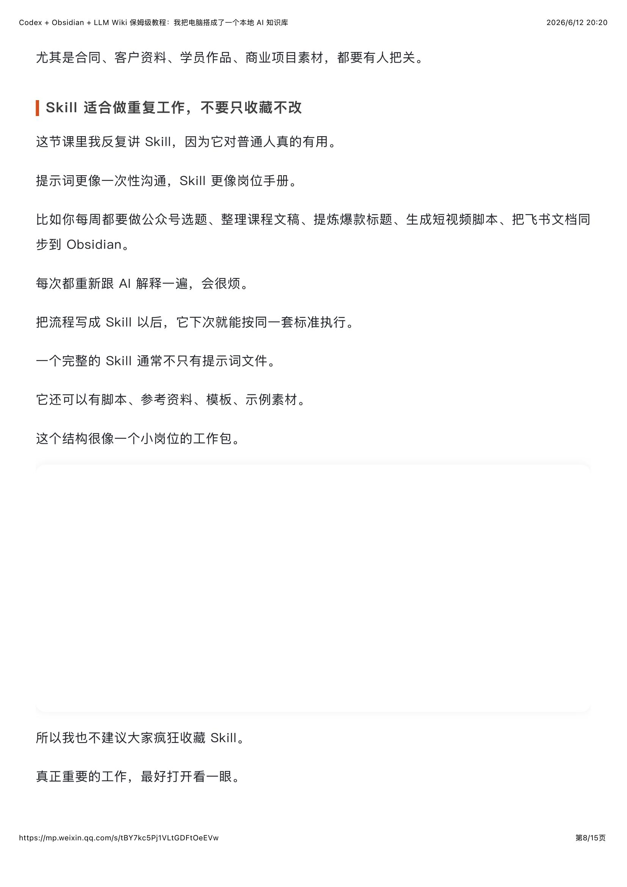
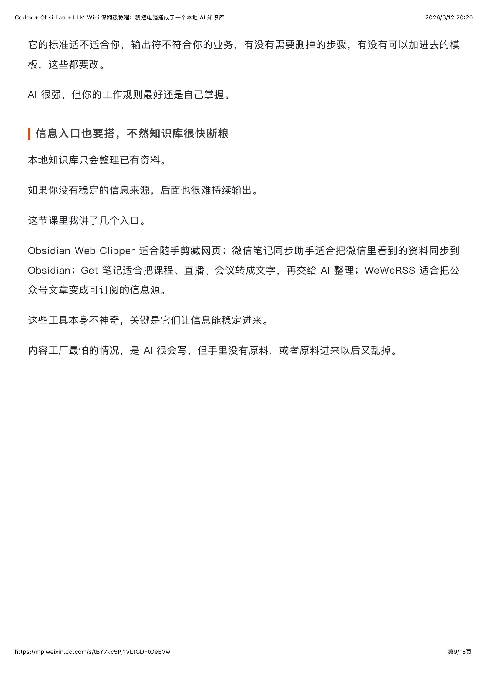
七、进阶技巧
7.1 多知识库管理
你可以在 Codex 中添加多个 Obsidian 知识库作为不同项目，
分别配置不同的 AGENTS.md，实现工作知识库、个人知识库、学习知识库的分离管理。
7.2 自动化工作流
结合 Codex 的自动化功能，可以设置定时任务：
- 每天自动整理当天的日记内容，生成摘要并归档
- 每周自动扫描知识库，标记长期未更新的"休眠笔记"
- 自动为新增的外部资料生成标签和摘要
7.3 模板化笔记
在 Obsidian 中创建笔记模板（如会议记录、读书笔记等），配合 Codex 实现一键生成标准化笔记。
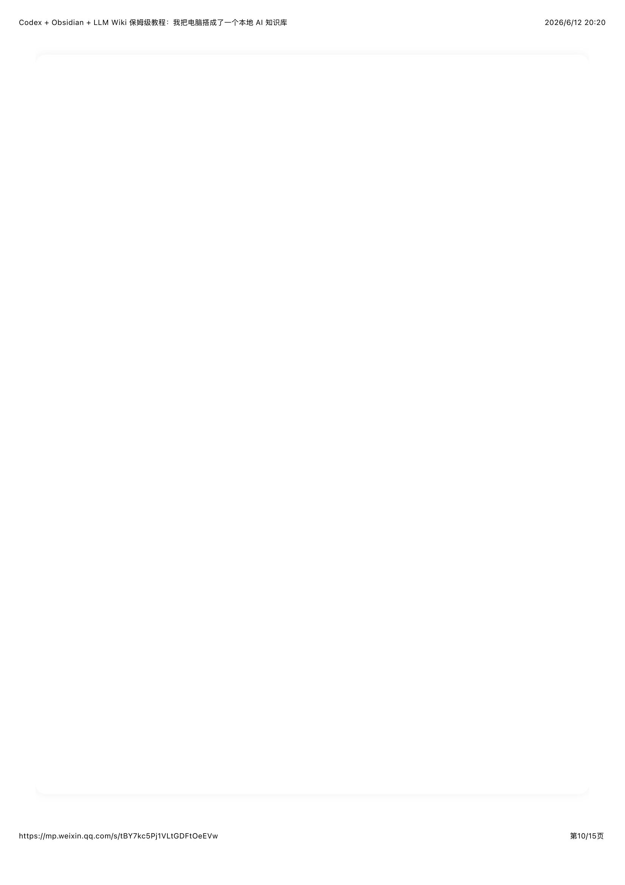
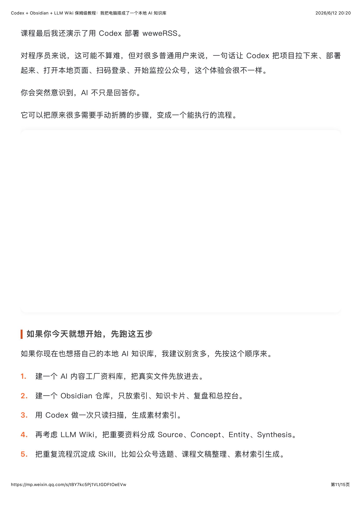
八、常见问题与排查
Q1: LLM Wiki 索引速度很慢怎么办？
- 检查是否选择了合适的嵌入模型，本地模型通常更快
- 排除不需要索引的大型文件（如 PDF、图片）
- 减少一次性索引的文件数量，分批进行
Q2: Codex 检索不到知识库内容？
- 确认知识库文件夹已正确添加为 Codex 项目
- 检查 AGENTS.md 中是否正确配置了检索规则
- 确保 LLM Wiki 已完成索引（查看插件状态）
Q3: 笔记内容更新后 AI 感知不到？
- 确认 LLM Wiki 设置为"文件变更时自动更新索引"
- 手动触发一次重新索引
- 重启 Codex 后重新连接知识库项目
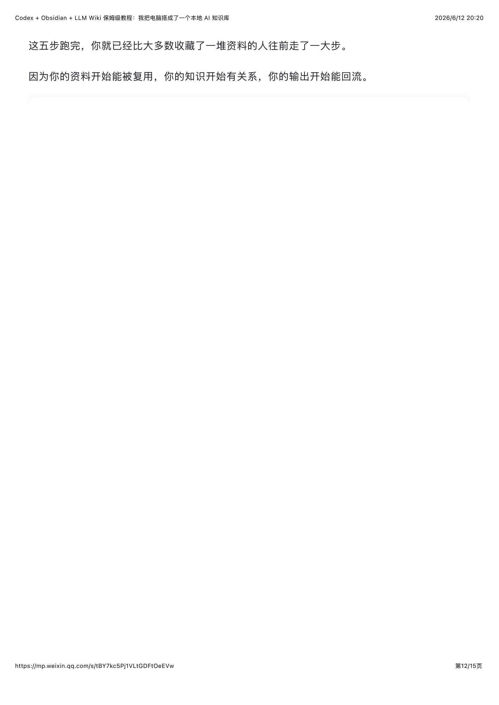
九、总结与展望
通过 Codex + Obsidian + LLM Wiki 的组合，你拥有了一个完全本地化、可对话交互的个人 AI 知识库。 它不仅是一个笔记系统，更是一个能与 AI 深度融合的"第二大脑"。
随着 LLM Wiki 和 Codex 的持续更新，本地 AI 知识库的能力边界还在不断扩展。 未来你可以期待更智能的自动归类、更深度的知识图谱分析，以及与其他生产力工具的深度集成。
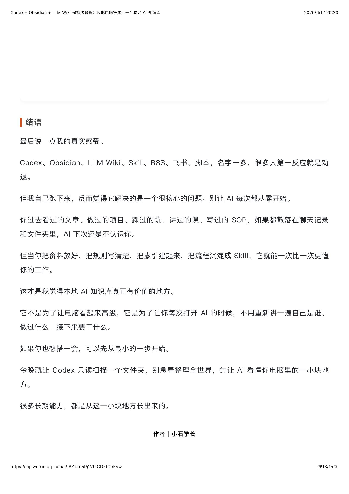
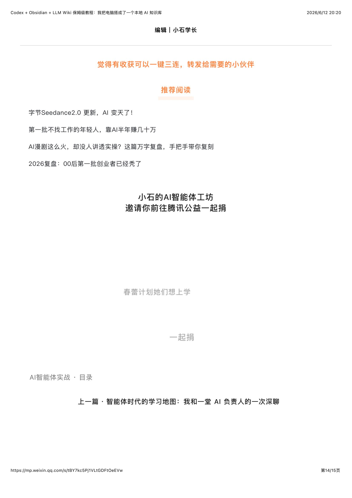
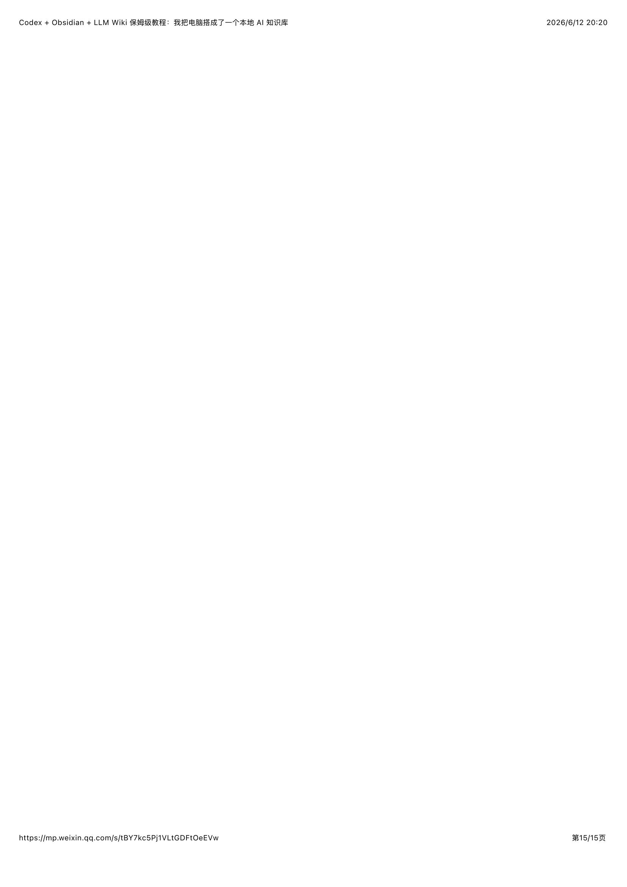